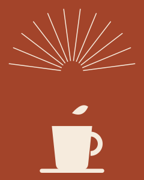
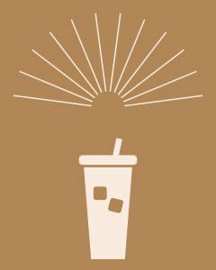
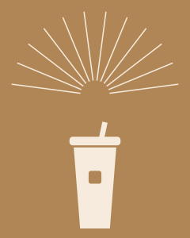
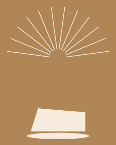
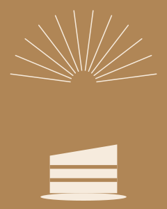
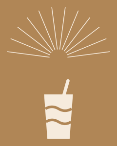
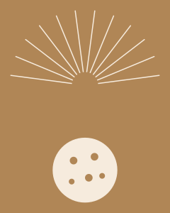

Sora'da sonbahar
-

Pumpkin Spice Latte
Balkabağı, tarçın, süt ve espresso. Sonbahar boyunca.
Fiyat için sorunuz
Sıcak Kahveler
Menümüz çok yakında burada. Şimdilik tezgahta sorun ya da arayın: 0552 731 23 30
Soğuk Kahveler
-

Buzlu Latte
Bol buz, soğuk süt, espresso.
Fiyat için sorunuz
-

Buzlu Americano
Sade ve serin.
Fiyat için sorunuz
Tatlılar
-

San Sebastian Cheesecake
Bizim yaptığımız tatlı. Üstü yanık, içi kremamsı.
Fiyat için sorunuz
-

Dilim pastalar
Fıstıklı ve çikolatalı. Her gün taze geliyor, günün pastaları vitrinde.
Fiyat için sorunuz
-

Kupta tatlı
Katmanlı, kaşıkla yenen. Her gün taze.
Fiyat için sorunuz
-

Kurabiye
Kahvenin yanına.
Fiyat için sorunuz